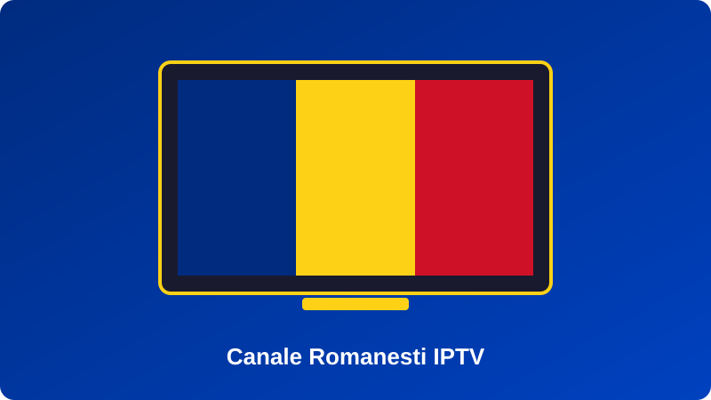
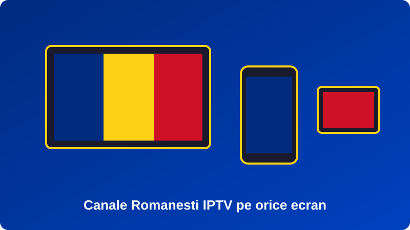

Daca locuiesti departe de tara, canale romanesti iptv este probabil cautarea pe care ai facut-o de cateva ori. Vrei jurnalul de seara, emisiunea preferata, un meci sau un film romanesc, fara sa depinzi de parabola, de cablu sau de un abonament local care nu are posturi din Romania. Intrebarea reala este cum alegi o solutie care chiar functioneaza seara de seara, nu doar in prima zi de test.
Un serviciu bun inseamna mai mult decat o lista lunga. Conteaza stabilitatea in orele de varf, ghidul de programe, calitatea imaginii, suportul in limba romana si compatibilitatea cu televizorul pe care il ai deja in sufragerie. Multi romani din Germania, Italia, Spania sau Marea Britanie ajung sa plateasca de doua ori: o data pentru o lista ieftina care se opreste, a doua oara pentru una serioasa.
In acest ghid explicam pas cu pas ce inseamna canale romanesti iptv, ce categorii de posturi poti urmari, cum testezi calitatea inainte sa platesti si ce greseli sa eviti. Echipa Romania IPTV lucreaza zilnic cu familii din diaspora, asa ca recomandarile vin din situatii concrete. Pentru o imagine de ansamblu, incepe cu articolul despre iptv romania, apoi revino aici pentru detalii despre canale.

Cuprins
- Ce inseamna canale romanesti IPTV
- Ce categorii de canale gasesti
- Generaliste si stiri: Pro TV, Antena, Digi24
- Sport, filme si canale pentru copii
- Cum verifici calitatea in 5 pasi
- Canale romanesti IPTV in diaspora
- Aplicatii si dispozitive potrivite
- Greseli frecvente la alegerea unei liste
- Intrebari frecvente
Ce inseamna canale romanesti IPTV
IPTV este prescurtarea de la Internet Protocol Television: imaginea ajunge la tine prin conexiunea de internet, nu prin antena sau cablu. Cand cauti canale romanesti iptv, te referi la posturile de televiziune din Romania livrate in acest mod, de obicei printr-o aplicatie pe televizor, telefon sau box Android.
Cum ajunge semnalul la tine
Furnizorul primeste semnalul televiziunilor, il proceseaza pe servere si il trimite prin internet. Tu deschizi aplicatia, alegi postul si in cateva secunde ai imaginea. Nu ai nevoie de parabola, de receptor dedicat sau de contract la cablul local din tara de resedinta.
De ce il aleg romanii din diaspora
Motivele sunt practice: pretul, lipsa posturilor romanesti in ofertele locale, comoditatea si dorinta de a ramane aproape de ce se intampla acasa. Pentru multe familii, televizorul pornit pe un post romanesc inseamna un strop de acasa in fiecare seara. Daca vrei sa vezi si ce posturi exista pe categorii, citeste ghidul despre canale romanesti.
Ce categorii de canale gasesti
O oferta serioasa de canale romanesti iptv este organizata clar, ca sa nu derulezi prin sute de posturi pana gasesti ce cauti. Iata grupele obisnuite.
| Categorie | Continut | Potrivit pentru |
|---|---|---|
| Generaliste | Seriale, emisiuni, divertisment | Toata familia |
| Stiri | Jurnale, dezbateri, breaking news | Cine vrea sa fie la curent |
| Sport | Fotbal, tenis, handbal, Formula 1 | Suporteri |
| Filme si seriale | Productii straine si romanesti | Seara si weekend |
| Copii | Desene animate, programe educative | Familii cu copii |
| Muzica | Videoclipuri, muzica populara | Fundal sonor, petreceri |
| Documentare | Natura, istorie, calatorii | Curiosi |
HD, Full HD si 4K
Multe posturi ruleaza in HD, iar unele oferte de sport ajung la imagine superioara. Atentie: eticheta 4K nu garanteaza o imagine mai buna. Conteaza si bitrate-ul, adica cata informatie trimite serverul pe secunda, precum si viteza conexiunii tale.
Posturi locale si regionale
Pe langa marile televiziuni, unele liste includ posturi locale. Pentru cine a plecat dintr-un oras mic, ele pastreaza legatura cu comunitatea de acasa si cu stirile din zona.
Organizare si favorite
Dupa ce primesti accesul, creeaza un grup de favorite cu 10-15 posturi pe care le urmaresti zilnic. Economisesti timp, iar copiii isi gasesc singuri desenele animate fara sa treaca prin intreaga lista.
Generaliste si stiri: Pro TV, Antena, Digi24
Marea majoritate a utilizatorilor incep cu posturile mari: Pro TV, Antena 1, Kanal D, Prima TV, Digi24, Antena 3 CNN si altele. Acestea aduc serialele, emisiunile de divertisment si jurnalele de stiri la care te uitai acasa.
Stiri in timp real
Canalele de stiri conteaza mai ales in perioade agitate: alegeri, evenimente sportive sau situatii de urgenta. Un serviciu bun mentine fluxul stabil si cand se aduna multi spectatori in acelasi timp. Pentru detalii despre cum alegi un post anume, vezi si articolul despre canal iptv.
Seriale si emisiuni
Seara, familia vrea de obicei serialul sau emisiunea preferata. Ghidul de programe (EPG) te ajuta sa vezi ce urmeaza si sa planifici seara, iar ora se ajusteaza automat la fusul tau orar.
Sport, filme si canale pentru copii
Pachetele complete includ si sport, filme si programe pentru cei mici. Aceste categorii cer cea mai buna stabilitate, pentru ca se vad direct in momentele importante.
Sport live
Fotbal, tenis, handbal sau curse auto: meciurile live sunt testul adevarat al unui serviciu. Verifica in timpul unui eveniment real cum se comporta imaginea, nu doar in timpul zilei, cand reteaua este libera.
Filme si seriale
Canalele de filme completeaza oferta generalistelor. Merita sa verifici daca ai subtitrari sau sunet in romana si cum arata imaginea pe ecran mare.
Desene animate pentru copii
Pentru familiile cu copii, un grup de canale cu desene animate in limba romana ajuta copiii sa pastreze limba. Foloseste lista de favorite ca cei mici sa gaseasca rapid ce le place.
Cum verifici calitatea in 5 pasi
Inainte sa platesti, fa un test scurt, dar atent. Iata pasii care te scutesc de surprize.
- Cere un test gratuit si foloseste-l cel putin o seara intreaga.
- Urmareste cinci canale diferite in orele de varf, intre 19:00 si 23:00.
- Verifica ghidul de programe: sunt afisate corect emisiunile si orele?
- Schimba rapid intre canale si noteaza cat dureaza pornirea.
- Scrie echipei de suport si vezi cat de repede si cat de clar primesti raspuns.
Semnale de alarma
Fii precaut daca primesti promisiuni exagerate, nu exista nicio forma de suport sau ti se cere plata prin metode neclare. Un furnizor transparent explica ce oferi, cum activezi si cum primesti ajutor. Daca vrei sa compari cu optiunile din afara, poti citi si despre greek iptv sau tilaa iptv, doua servicii care functioneaza dupa principii asemanatoare pentru alte comunitati.
Cum alegi ora potrivita pentru testare
Fa testul in zilele cand te uiti de obicei la televizor. Seara, dupa ora 19:00, retelele sunt mai aglomerate, iar un serviciu slab se vede imediat: imaginea se opreste, sunetul se desincronizeaza sau aplicatia se inchide. Daca totul merge bine in acest interval, ai o confirmare serioasa. Noteaza si cat de repede porneste fiecare post, pentru ca timpul de incarcare spune multe despre calitatea serverelor.
Compatibilitatea cu telecomanda
Un detaliu pe care multi il uita este telecomanda. Aplicatia buna se controleaza simplu, cu sagetile si butonul OK, fara sa fie nevoie de mouse sau tastatura. Parintii si bunicii apreciaza mai ales aceasta simplitate, deoarece nu vor sa invete meniuri complicate doar ca sa vada jurnalul.
Canale romanesti IPTV in diaspora
Pentru romanii din strainatate, canale romanesti iptv inseamna acces la aceleasi posturi indiferent de tara. Germania, Italia, Spania, Marea Britanie, Belgia si Franta au comunitati mari, iar serviciul functioneaza oriunde ai internet stabil.
Fusul orar si programul
Diferenta de ora fata de Romania poate fi o problema. Ghidul de programe afiseaza ora locala, iar daca serviciul ofera redare din arhiva (catch-up), poti vedea emisiunea mai tarziu, in timpul tau liber.
Pentru toata familia, pe mai multe ecrane
Verifica la ce numar de dispozitive poti folosi accesul. Parintii pot urmari jurnalul in sufragerie, iar copiii desenele pe tableta. Pentru un ghid dedicat comunitatii din afara tarii, vezi iptv romania diaspora.

Cum arata o seara obisnuita
Imagineaza-ti o familie din Torino sau din Munchen: copiii se uita la desene animate dupa scoala, parintii pornesc jurnalul de stiri, iar in weekend urmeaza un meci sau un film. Toate acestea vin din aceeasi aplicatie, fara receptoare suplimentare si fara instalari complicate. Daca o parte din familie este inca in Romania, ai aceleasi emisiuni de discutat la telefon, iar conversatiile devin mai usoare.
Cat dureaza instalarea
Dupa ce ai primit datele de acces, instalarea dureaza de obicei cateva minute: descarci aplicatia, introduci datele si alegi canalele favorite. Daca ai nevoie de ajutor, scrii pe WhatsApp si primesti indicatii pas cu pas, adaptate aparatului tau.
Aplicatii si dispozitive potrivite
Poti urmari televiziunea romaneasca pe aproape orice aparat modern. Alegerea depinde de ce ai deja acasa si de cat de simpla vrei sa fie instalarea.
Smart TV, box Android si Fire TV Stick
Un Smart TV recent poate rula direct aplicatia. Pentru televizoarele mai vechi, un Android TV Box sau un Fire TV Stick rezolva problema la un cost mic. Boxul ofera de obicei performanta mai buna si actualizari mai simple.
Telefon, tableta si computer
Pe telefon si tableta instalezi aplicatia din magazinul oficial sau dintr-un fisier primit de la furnizor. Pe computer poti folosi un player compatibil cu liste M3U. Ai nevoie de o conexiune buna: minimum 10 Mbps pentru HD.
Wi-Fi sau cablu
Daca imaginea se blocheaza, mai intai verifica reteaua. Un cablu Ethernet, un router mai aproape sau o banda mai putin aglomerata rezolva multe probleme. Mai multe idei gasesti in articolul despre canale iptv romanesti gratis, unde explicam si riscurile listelor gratuite.
Greseli frecvente la alegerea unei liste
Cele mai multe nemultumiri apar din aceleasi cauze. Le poti evita usor daca le cunosti dinainte.
Alegerea doar dupa pret
Un pret foarte mic ascunde de obicei servere aglomerate si lipsa suportului. Compara pe baza testului, nu doar a sumei. Pentru o comparatie mai larga, vezi si canale iptv romania.
Nefolosirea testului
Multi platesc direct, fara sa testeze. Un test gratuit costa doar cateva minute si iti arata exact cum se comporta serviciul pe reteaua si televizorul tau.
Ignorarea suportului
Cand apare o problema, conteaza sa gasesti pe cineva care raspunde in romana. Echipa Romania IPTV raspunde pe WhatsApp si ajuta la instalare pas cu pas.
Liste gratuite necunoscute
Listele gratuite de pe internet pot fi instabile, pot contine reclame agresive sau fisiere dubioase. Pentru uz zilnic, un serviciu cu suport ramane alegerea mai sigura.
Mentenanta si actualizari
Un serviciu bun nu inseamna doar configurare initiala. Aplicatiile se actualizeaza, listele se modifica, iar canalele apar si dispar in functie de contracte. De aceea merita sa alegi un furnizor care te anunta din timp si care raspunde cand ceva nu mai functioneaza. In acest fel nu ramai fara posturile preferate exact cand ai nevoie de ele.
Vrei sa testezi canalele romanesti fara risc?
Scrie-ne pe WhatsApp si primesti un test gratuit cu Romania IPTV: fara card, fara contract, cu suport in limba romana.
Cere test gratuit pe WhatsAppIntrebari frecvente
Ce sunt canalele romanesti IPTV?
Sunt posturile de televiziune din Romania transmise prin internet, intr-o aplicatie instalata pe Smart TV, telefon sau box Android, fara antena, cablu sau satelit.
Pot vedea canale romanesti IPTV din strainatate?
Da. Serviciul functioneaza in Germania, Italia, Spania, Marea Britanie, Belgia, Franta si alte tari, cu conditia sa ai o conexiune stabila la internet.
Ce viteza de internet este necesara?
Aproximativ 10 Mbps pentru HD si 25 Mbps pentru 4K. Conectarea prin cablu Ethernet reduce blocajele fata de Wi-Fi.
Gasesc si canale de sport si filme?
Da, pachetele complete includ sport, filme, seriale si desene animate, alaturi de posturile generaliste si de stiri. Testul gratuit iti arata cum se vad inainte de plata.
Pe ce dispozitive merg canalele romanesti IPTV?
Pe Smart TV, Android TV Box, Fire TV Stick, Apple TV, telefon, tableta si computer, prin aplicatii compatibile cu liste M3U sau Xtream.
Cum primesc un test gratuit?
Scrie pe WhatsApp echipei Romania IPTV, primesti datele de acces si instalezi aplicatia. Pentru test nu se cere card bancar.
Este legal sa folosesc un serviciu IPTV?
Tehnologia IPTV este legala. Ce conteaza este sursa: alege furnizori transparenti, care ofera suport si conditii clare, nu liste anonime de pe internet.
De ce nu merg listele gratuite de canale romanesti?
Listele gratuite se opresc des, nu au ghid de programe si nu ofera suport. Pentru vizionare zilnica, un serviciu cu test si asistenta este alegerea sigura.
Concluzie
Alegerea potrivita pentru canale romanesti iptv inseamna sa privesti stabilitatea, ghidul de programe, suportul si compatibilitatea cu aparatele tale, nu doar numarul de posturi. Cere un test, urmareste cateva canale in orele de varf si decide dupa rezultat. Astfel ai televiziunea romaneasca acasa, oriunde in lume.
Pentru mai multe informatii, citeste ghidul despre iptv romania, apoi scrie-ne pe WhatsApp si porneste-ti canalele preferate cu Romania IPTV.